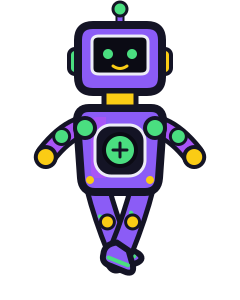
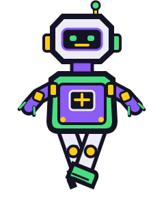
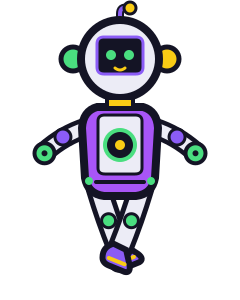

Option A · Beacon Courier
Rounded courier shell, bright visor, and a green energy core.

480 × 360 stage · 240 × 300 SVG · pivot at viewBox origin (0, 0)
Three original robot concepts. Each card has a four-frame walk cycle. The crosshair marks the shared torso rotation point; toggle it to compare the same center across frames.
Rounded courier shell, bright visor, and a green energy core.

Angular workshop helper with a wide chest panel and sturdy treaded boots.

Orb-headed sensor bot with side pods and a bright central lens.
